Home / MLF / Week 4 / Real questions
MLF week 4 - real exam questions
55 questions pulled from past papers whose wording matches this week's topics, newest first, duplicates removed. Pick your answers, then press Check answers. Figures and answer keys are the originals.
Elapsed 00:00
Consider a  satisfying
are 9 and 20 respectively, which of the following statements is/are necessarily true?
satisfying
are 9 and 20 respectively, which of the following statements is/are necessarily true?
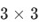
matrix satisfying
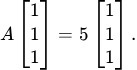
If trace and determinant of are 9 and 20 respectively, which of the following statements is/are necessarily true?- The matrix
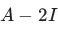
is singular. - The trace of
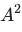
is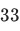
. - The matrix is singular.
- The determinant of
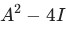
is .
.
Let  be a Hermitian matrix whose eigenvalues are
be a Hermitian matrix whose eigenvalues are  Which of the following statements is/are necessarily true?
Which of the following statements is/are necessarily true?
be a Hermitian matrix whose eigenvalues are Which of the following statements is/are necessarily true?- is positive definite.
- There exists a nonzero vector
 such that
such that  , where
, where  denotes the conjugate transpose of
denotes the conjugate transpose of  .
. - is invertible.
 is Hermitian.
is Hermitian.
Comprehension passage for this question
Suppose is a real 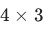
matrix with singular values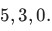
Based on the above data, answer the given subquestions.What is the sum of the eigenvalues of
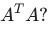
Comprehension passage for this question
Based on the above data, answer the given subquestions.

Which of the following pair represents the eigenvalues of ?
?


Comprehension passage for this question
Based on the above data, answer the given subquestions.
Which of the following statements is/are correct?
- The rank of is
 .
. - The nullity of is .
- The determinant of is .
- The matrix is invertible.
Let  be a real symmetric matrix. Consider the following statements. (1) is orthogonally diagonalizable. (2) is not diagonalizable. (3) All the eigenvalues of are real. (4) The eigenvalues of may be imaginary. (5) Eigenvectors corresponding to distinct eigenvalues of are linearly independent. (6) Eigenvectors corresponding to distinct eigenvalues of are linearly dependent. Which of the above statements are true?
be a real symmetric matrix. Consider the following statements. (1) is orthogonally diagonalizable. (2) is not diagonalizable. (3) All the eigenvalues of are real. (4) The eigenvalues of may be imaginary. (5) Eigenvectors corresponding to distinct eigenvalues of are linearly independent. (6) Eigenvectors corresponding to distinct eigenvalues of are linearly dependent. Which of the above statements are true?
be a real symmetric matrix. Consider the following statements. (1) is orthogonally diagonalizable. (2) is not diagonalizable. (3) All the eigenvalues of are real. (4) The eigenvalues of may be imaginary. (5) Eigenvectors corresponding to distinct eigenvalues of are linearly independent. (6) Eigenvectors corresponding to distinct eigenvalues of are linearly dependent. Which of the above statements are true?- (1), (3), (5)
- (2), (4), (6)
- (2), (3), (5)
- (1), (4), (6)
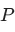
is a square matrix of order with the eigenvalue
with the eigenvalue  repeated twice. Which of the following is/are true?
repeated twice. Which of the following is/are true?- is invertible.
- Each of the entries on the main diagonal of is equal to .
- has two linearly independent eigenvectors.
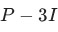
is not invertible, where is the identity matrix.
is the identity matrix.
Let
and  , and whose eigenvectors are
, and whose eigenvectors are
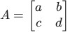
be the matrix whose eigenvalues are and , and whose eigenvectors are 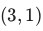
and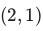
respectively. Find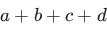
. Your answer should be an integer.Consider a matrix  with eigenvalues
with eigenvalues
with eigenvalues 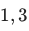
and . Find the sum of the eigenvalues of the matrix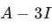
. Your answer should be an integer. Note: I is the identity matrix.If is a matrix with eigenvalues  , what is det
, what is det
is a matrix with eigenvalues 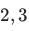
and , what is det 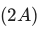
? Note: det denotes the determinant.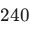
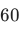
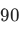
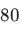
Consider the following matrix for  :
:
 Which of the following options is/are correct?
Which of the following options is/are correct?
:
Which of the following options is/are correct? is unitary for all real values of
is unitary for all real values of  other than
other than  .
.- is unitary for
 .
. - is unitary for
 .
. - If , then all eigenvalues of satisfy
 .
. - If is any non-zero real value, then all eigenvalues of satisfy .
Comprehension passage for this question
Consider the following dataset in 
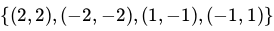
Run PCA on this dataset. Based on the above data, answer the given subquestions.Let  be the unit-norm eigenvector corresponding to the smallest eigenvalue of the covariance matrix. Find the variance of the dataset along the direction . Enter the nearest integer as your answer.
be the unit-norm eigenvector corresponding to the smallest eigenvalue of the covariance matrix. Find the variance of the dataset along the direction . Enter the nearest integer as your answer.
be the unit-norm eigenvector corresponding to the smallest eigenvalue of the covariance matrix. Find the variance of the dataset along the direction . Enter the nearest integer as your answer.Consider the following matrices:
 Which of the following is true?
Which of the following is true?
Which of the following is true?- is diagonalizable, is not diagonalizable.
- is not diagonalizable, is diagonalizable.
- Both and are diagonalizable.
- Neither nor is diagonalizable
The matrix
 has eigenvalues and
has eigenvalues and  . Which of the following options is/are correct?
. Which of the following options is/are correct?
has eigenvalues and . Which of the following options is/are correct?


Which of the following is/are true ?
- Every square matrix with real entries has at least one real eigenvalue.
- A set of two eigenvectors corresponding to the same eigenvalue of a square matrix must be linearly dependent.
- Given a square matrix of order
 , the set of all eigenvectors for an eigenvalue
, the set of all eigenvectors for an eigenvalue  , along with the zero vector, forms a subspace of
, along with the zero vector, forms a subspace of  .
. - A square matrix is not invertible if and only if is one of its eigenvalues.
Comprehension passage for this question
Consider the matrix given below:
 Based on the above data, answer the given subquestions.
Based on the above data, answer the given subquestions.If is the smallest eigenvalue of , enter the value of . Your answer should be an integer.
is the smallest eigenvalue of , enter the value of . Your answer should be an integer.Comprehension passage for this question
Consider the matrix given below:
Based on the above data, answer the given subquestions.If  is an eigenvector of corresponding to , find
is an eigenvector of corresponding to , find  . Enter your answer correct to two decimal places.
. Enter your answer correct to two decimal places.
is an eigenvector of corresponding to , find . Enter your answer correct to two decimal places. is a
is a 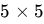
matrix whose eigenvalues are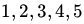
. Consider the set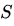
as defined below: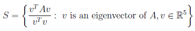
Find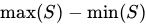
.Consider two datasets in
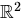
,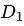
and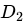
, each having three points as shown below. The figure is drawn to scale. PCA is run on both these datasets separately.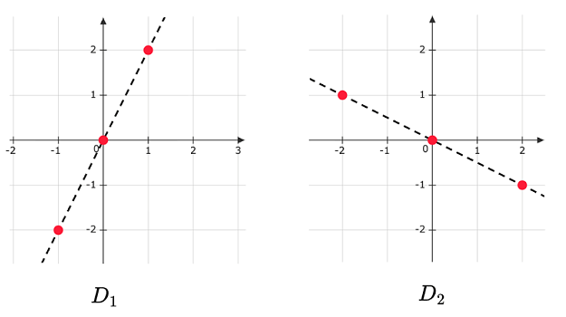
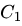
and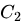
are the covariance matrices of the two datasets respectively. If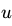
is the eigenvector corresponding to the largest eigenvalue of and is the eigenvector corresponding to the smallest eigenvalue of , find the absolute value of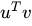
. Both eigenvectors have unit norm. Your answer should be an integer.Comprehension passage for this question
Based on the above data, answer the given subquestions.

Which of the following is true?
- A does not have real eigenvalues
- A has two distinct real eigenvalues
- A has two real eigenvalues, not necessarily distinct
Comprehension passage for this question
There is no common data for this question. There are three independent sub-questions for which you have to answer True/False.If a square matrix A is diagonalizable, then A is invertible.
- True
- False
Comprehension passage for this question
There is no common data for this question. There are three independent sub-questions for which you have to answer True/False.The eigenvalues of a real symmetric matrix are real.
- True
- False
Comprehension passage for this question
There is no common data for this question. There are three independent sub-questions for which you have to answer True/False.A square matrix A of shape n x n is diagonalizable if and only if it has n distinct eigenvalues.
- True
- False
Comprehension passage for this question
Based on the above data, answer the given subquestions.

Which of the following options is /are true?
- A is not a Hermitian matrix.
- A is not a unitary matrix.
- A is diagonalizable.
- None of these

- A is a Hermitian matrix.
- A is a unitary matrix.
- All eigenvalues of A are not real.
- Eigenvectors corresponding to different eigenvalues of A are not orthogonal.
Comprehension passage for this question
Based on the above data, answer the given subquestions.

The eigenvalues of the covariance matrix are


Which of the following options is/are true regarding the projection matrix?
- It is a symmetric matrix.
- It is an orthogonal matrix.
- It is orthogonally diagonalizable.
- It is always a rank 1 matrix.
In the context of Principal Component Analysis (PCA), which of the following statements is/are correct?
- PCA projects the original data onto a lower-dimensional subspace thatcaptures the maximum variance.
- The eigenvectors of the covariance matrix correspond to the directions ofmaximum variance.
- The principal components form a basis that is not necessarily orthogonal.
- The principal components obtained through PCA are always uncorrelated.
In the context of Linear Algebra, which of the following statements about Principal Component Analysis (PCA) is/are true?
- The principal components of a matrix are given by the eigenvectors of itscovariance matrix.
- The principal components of a matrix are given by the singular values of itscovariance matrix.
- PCA finds the principal components by maximizing the variance along eachcomponent.
- The principal components form a basis that is not necessarily orthogonal.
Which of the following statements is/are True regarding Schur’s Theorem?
- Every square matrix is unitarily similar to an upper triangular matrix.
- The diagonal entries of the Schur form of a matrix are its eigenvalues.
- A square matrix with repeated eigenvalues cannot always be unitarily similarto an upper triangular matrix.
- Schur’s Theorem holds only for square matrices, as it requires unitarysimilarity and the presence of eigenvalues.

- Eigenvectors corresponding to the two different eigenvalues of M areorthogonal.
- The matrix M is not diagonalizable.
- The eigenvalues of M are 4 and 1
- The rank of M is 1.
Comprehension passage for this question
Based on the above data, answer the given subquestions.

If B is diagonalizable, what is the invertible matrix P such that B = PDP−1?


Comprehension passage for this question
Based on the above data, answer the given subquestions.
If B is diagonalizable, which of the following is a diagonal matrix D such that B = PDP⁻¹? Use the matrix P obtained in the previous question.


Comprehension passage for this question
Based on the above data, answer the given subquestions.
If B is diagonalizable, which of the following is a diagonal matrix D such that B = PDP−1? Use the matrix P obtained in the previous question.

- A is a unitary matrix.
- A is Hermitian matrix.
- Eigenvectors of A are orthogonal.
- Eigenvalues of A are real.

- A is not a unitary matrix.
- A is Hermitian matrix.
- Eigenvectors of A are orthogonal.
- Eigenvalues of A are not real.
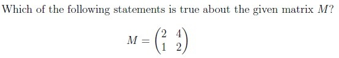
- M is an invertible matrix.
- M is a singular matrix.
- The determinant of M is 4.
- M is diagonalizable.
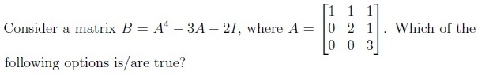
- B has eigenvalues -4, 8, 70.
- A has eigenvalues 1, 16, 81.
- B is an upper triangular matrix.
- B is a lower triangular matrix.
Consider a square matrix A of order 3 such that trace(A) = 3 and det(A) = 2. If 1 is an eigenvalue of A, then which of the following options is/are true?
- Matrix A is symmetric matrix.
- Matrix A is Hermitian matrix.
- 1 + i is an eigenvalue of A.
- 2 − i is an eigenvalue of A.
- Matrix A is diagonalizable.

- A is a Hermitian matrix.
- A is digonalizable.
- All eigenvalue of A real.
- A has eigenvalues that are neither real nor purely imaginary.
Let A be a real symmetric positive definite matrix. Which of the following options is/are true?
- The eigenvectors of A may or may not be orthogonal.
- If A is similar to a diagonal matrix B, then B is also positive definite.
- AT A is not positive definite.
- AT A is not similar to a diagonal matrix.
Comprehension passage for this question

Which of the following statements is/are true about A?
- A is the Hermitian matrix.
- A is the Unitary matrix.
- All eigenvalues are real.
- Eigenvalues are complex.
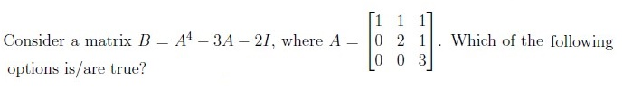
- Eigenvalues of A are 1, 2, and 3.
- Eigenvalues of A are 1, 2, and 2.
- Eigenvalues of B are 2, 20, and 78.
- Matrix B is diagonalizable.
Let A and B be symmetric matrices such that AB = BA. Then which of the following options is/are true?
- AB is a symmetric matrix.
- AB is orthogonally diagonalizable.
- BA has real eigenvalues.
- AB is not a symmetric matrix.

- A is Hermitian matrix.
- A is not Hermitian matrix.
- A is unitarily diagonalizable.
- A is not unitarily diagonalizable.
Which among the following statements are true about principal component analysis (PCA)?
- PCA is a supervised learning algorithm.
- Principal components are the eigenvectors of the sample covariance matrix.
- Principal components are eigenvectors of the centered data matrix.
- If p1 and p2 are the principal component vectors, then p1 is orthogonal to p2.
Which of the following statements is/are true for a real symmetric matrix A?
- AT A and AAT have the same rank.
- AT A and AAT have the same eigenvalues
- AT A and AAT have the same eigenvectors.
- AT A and AAT have the same singular values.
Which among the following is true for PCA?
- The first principal component represents the direction along which thevariance of the dataset is maximized.
- The first principal component represents the direction along which thevariance of the dataset is minimized.
- The first principal component is the eigenvector corresponding to the smallesteigenvalue of the covariance matrix.
- The first principal component is the eigenvector corresponding to the largesteigenvalue of the covariance matrix.
Which among the following is/are true for a Hermitian matrix?
- The eigenvalues of a Hermitian matrix are always real.
- The diagonal elements of a Hermitian matrix are always real.
- All symmetric matrices are Hermitian.
- All Hermitian matrices are symmetric.
Let P1 be the projection matrix onto the line spanned by the vector a = [1, 2, 3]T . Let P2 be the projection matrix that projects vectors onto the plane perpendicular to span of a. Find the determinant of P1 + P2.
Which of the following statements are correct?
- If 0 is the eigenvalue of a matrix A, then A can’t be invertible.
- If all the eigenvalues of a matrix A are 0, then A is a zero matrix.
- If 3 is the eigenvalue of matrix A then 9 is the eigenvalue of A2.
- Every 2 × 2 matrix has atleast one real eigenvector.
Let f be a function of three variables. The eigenvalues of Hessian of f are 2, 4, 1. Then what does f
give ?
- Minima.
- Maxima.
- Saddle.
- It can be either maxima or minima.
What are the properties of principal components in PCA?
- All principal components are orthogonal to each other.
- The number of principal components for n-dimensional data are atmost n−1.
- The first principal component accounts for most of the possible variability ofthe original data i.e, maximum possible variance.
- The first principal component is the eigenvector of the covariance matrixcorresponding to the maximum eigenvalue.
Which of the following statements is/are true?
- Rank of a n × n Hermitian matrix is always equal to n.
- Rank of a n × n unitary matrix is always equal to n.
- If A is a Hermitian matrix, then AT is hermitian.
- Zero can be one of the eigen values of a unitary matrix.
Suppose that eigenvalues of matrix A are 1, 0.5, 0.25. The determinant of (A−1)T is NOTE: Enter your answer to the nearest integer.